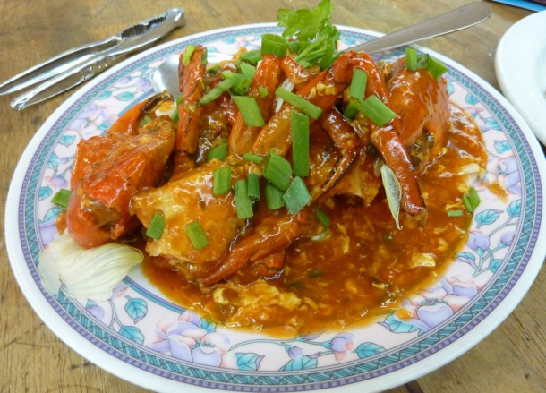

VARIETY OF ITEMS
Stir-fried crab in a tomato based, sweet, savoury and slightly hot chilli sauce. Break into its claws with crab crackers and suck at the flesh. The popular crab choice in Singapore is the mud crab but expect all sorts of shapes and sizes. While having lost its lustre of late the chilli Crab will always be a must-eat when in Singapore.
Biryani (/bɪrˈjɑːni/) is a mixed rice dish originating among the Muslims of the Indian subcontinent.[1][2][3] It is made with Indian spices, rice, and meat usually that of chicken, goat, lamb, prawn, fish, and sometimes, in addition, eggs or vegetables such as potatoes in certain regional varieties.

With obvious Chinese influences these Himalayan meat and/or veg dumplings make a great fast food snack to-go. While best known for Nepali origins momos are now common on all sides of Himalayan borders through Tibet, Bhutan and India. Momos are served with an optional hot chilli sauce, dark soy and a side of soup.

Sushi is ‘cooked vinegared rice, topped with ingredients’. Some of the popular ingredients in the bright and beautiful world of sushi includes thin cuts of fresh fish, caviar and fish eggs and wraps of seaweed. If the delicate tastes of sushi fail to excite then dabs of soy sauce, wasabi or pickled ginger will liven it up.